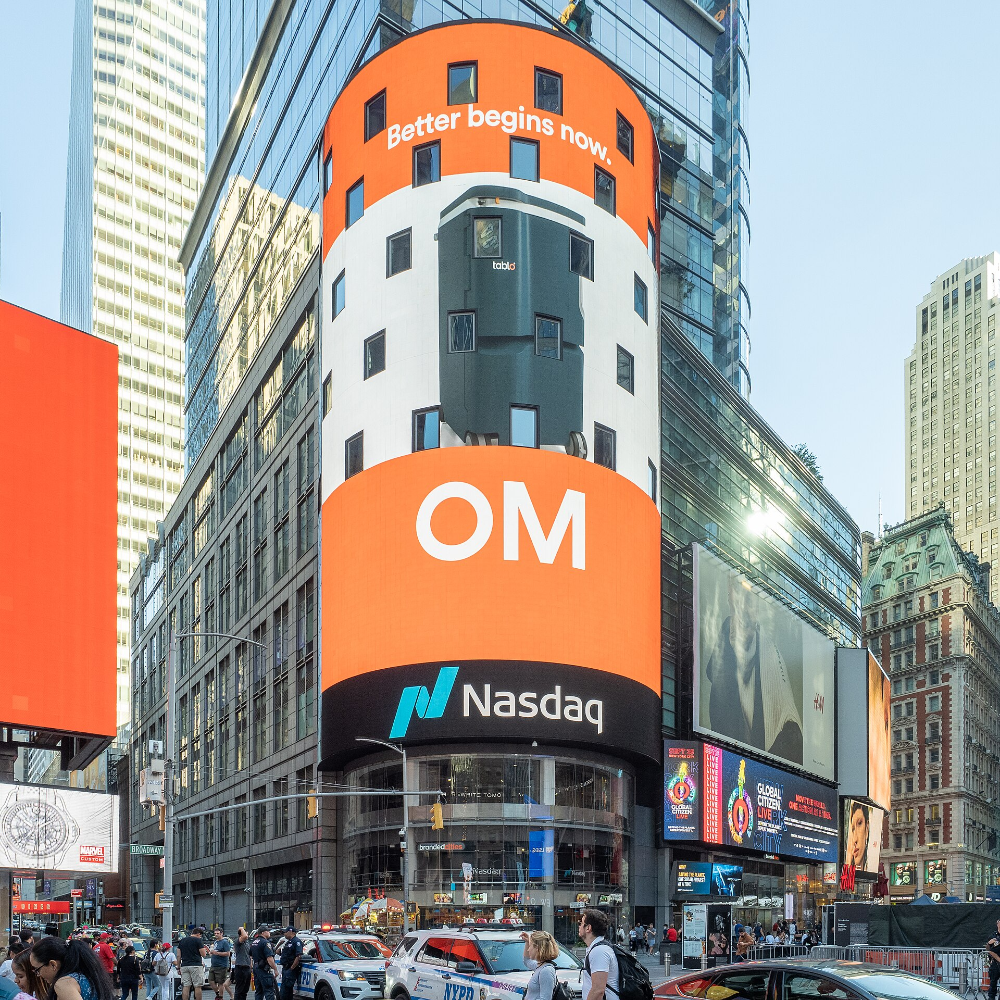

Vol. I · No. 53 · Friday, July 10, 2026 · 14 items · 6 sections · ~16 min read
A once-obscure Korean memory maker lands the largest listing an overseas company has ever run on a U.S. exchange; the newspapers accuse OpenAI of shredding its own evidence; and a former Federal Reserve chair signs on to keep watch over Anthropic.
The Splash · Markets & deals · New York
SK Hynix raises $26.5 billion on Nasdaq, the largest listing any foreign company has ever run in the United States

The Nasdaq MarketSite in Times Square; SK Hynix’s American depositary receipts began trading under the ticker SKHY on July 10. — Wikimedia Commons
On Friday, July 10, SK HynixInstitutionThe South Korean chipmaker, the world’s second-largest memory manufacturer after Samsung and the dominant supplier of the high-bandwidth memory that feeds AI accelerators. began trading on Nasdaq under the ticker SKHY after selling 177.9 million American depositary sharesConceptU.S.-listed certificates standing in for foreign shares, here ten ADSs to each SK Hynix common share, that let American institutions buy a Korean company without touching the Seoul exchange. at $149 apiece. The sale raised about $26.51 billion, eclipsing the $25 billion Alibaba raised in 2014 to become the largest share sale a non-U.S. company has ever run on an American exchange. The book was reported several times oversubscribed, roughly sevenfold, a level of demand that says as much about the appetite for anything attached to AI infrastructure as it does about the issuer.
The company is the point. SK Hynix holds about 56% of the market for high-bandwidth memoryConceptThe stacked memory, HBM, bolted next to AI processors to feed them data fast enough. It is increasingly the tighter bottleneck in the AI build-out than the processors themselves., the stacked chips bolted alongside Nvidia’s accelerators, and the listing hands that franchise to a deeper pool of American institutional capital just as memory has become the scarce input in the data-center boom. Proceeds go toward expanding that capacity. Chief executive Kwak Noh-jungPersonSK Hynix’s chief executive, who pitched the U.S. listing as a way to have global investors “reassess the company’s value more reasonably.” flew to New York to ring the opening bell.
For a reader tracking capital markets, this is the whole machine in one morning: a cross-border depositary-receiptConceptThe ADR/ADS structure a foreign issuer uses to list in the U.S., created by a depositary bank that holds the home-market shares and issues the American certificates against them. structure, a record-setting book, and a valuation the company openly says it came to America to reset. CNN called SK Hynix a “once-obscure chip maker” that has just landed the biggest U.S. listing by a foreign company; the obscurity is over, and the memory cycle it rode to get here is now a public American ticker.
“Listing in the U.S. market, where global large-cap tech companies congregate, will allow major institutional investors to reassess the company’s value more reasonably.”
— Kwak Noh-jung, SK Hynix CEO, July 10
Why it mattersA $26.5 billion cross-border listing is the biggest capital-markets event of the year and the clearest sign yet that the AI trade’s center of gravity is shifting toward the memory makers, the deal a Greenberg-Traurig-bound associate would be expected to know cold.
The New York Times asks a judge to sanction OpenAI, alleging it deleted logs and hid a database of its own infringement
On July 9 the news plaintiffs in the consolidated copyright suit against OpenAI, led by The New York Times and joined by the New York Daily News, asked a federal judge in the Southern District of New YorkInstitutionThe Manhattan federal trial court, the country’s premier venue for high-stakes commercial and copyright litigation, where the consolidated newspaper suits against OpenAI are pooled. to sanction the company. The papers allege OpenAI told the court it could not search its own models for the plaintiffs’ copyrighted material while it had in fact already done so, “even before the first News Plaintiff filed suit,” and that it deleted billions of ChatGPT outputs after the case began, in breach of the court’s preservation orderConceptA court directive freezing the destruction of any evidence once litigation is anticipated. Destroying material it covers is spoliation, punishable by sanctions up to an adverse-inference instruction..
The sharpest claim came out of an April deposition: the plaintiffs say an OpenAI data-privacy engineer revealed the company had amassed roughly 78 million de-identified ChatGPT conversations internally, a corpus they characterize as a way for OpenAI to measure how much it was infringing. If a court credits the account, the exposure is not just the underlying copyright question but spoliationConceptThe destruction or loss of evidence a party was obliged to keep. Courts punish it with fines, cost-shifting, or an instruction telling the jury to assume the lost evidence was unfavorable., the kind of evidence-preservation failure that can reshape a case independent of its merits.
Why it mattersDiscovery misconduct, not fair use, is where AI-copyright cases may actually turn, and a sanctions fight of this size is a live template for how every lab’s litigation hold and log-retention practice gets tested in court.
Capability, the labs, and the money betting on them.
Artificial intelligence · Washington
Ben Bernanke joins the trust that keeps Anthropic honest
Ben Bernanke, the former Federal Reserve chair, joined Anthropic’s Long-Term Benefit Trust on July 9. — Wikimedia Commons / Federal Reserve
Anthropic named Ben BernankePersonChair of the Federal Reserve from 2006 to 2014, through the 2008 financial crisis, and winner of the 2022 Nobel in economics for his work on banks and panics. to its Long-Term Benefit TrustInstitutionThe independent body inside Anthropic empowered to elect a majority of the board over time, designed to hold the company to its safety mission ahead of shareholder returns. on July 9, the independent body that can shape the company’s board and is meant to hold it to its stated mission over the interests of its investors. Bernanke, who steered the Fed through the 2008 crisis and shared the 2022 Nobel in economics, will focus on how AI is reshaping the economy and feed Anthropic’s economic research. He joins existing trustees Neil Buddy Shah, Richard Fontaine and Mariano-Florentino CuéllarPersonFormer California Supreme Court justice and president of the Carnegie Endowment, one of the sitting trustees on Anthropic’s benefit trust..
The timing is the tell. Anthropic is valued near $1.09 trillion and drifting toward a public listing, and installing a former central-bank chair on the governance body that sits above its board buys exactly the institutional credibility a public-benefit corporationConceptA corporate form, Anthropic’s, that legally binds directors to weigh a public mission alongside profit, the structure the benefit trust is built to enforce. wants when it starts talking to public-market investors. It is a governance signal aimed at the same audience an IPO prospectus is.
Why it mattersWhen the person who ran the Fed through the last crisis takes a seat watching a trillion-dollar AI lab, the governance of these companies has become a capital-markets story, and the benefit-trust structure is the novel instrument a securities lawyer will have to explain to the buy side.
Meta starts charging for AI, and it prices Muse Spark to undercut everyone
Meta launched Muse Spark 1.1 on July 9, the first model it charges businesses to use, a multimodal reasoning system built for agenticConceptAI that plans and executes multi-step tasks on its own, calling tools, writing code, and operating software, rather than just answering a single prompt. tasks like tool use and coding. The API prices at $1.25 per million input tokensConceptThe unit AI usage is billed in; a token is roughly three-quarters of a word. Labs charge separately, and more, for the output tokens a model generates. and $4.25 per million output, which Mark Zuckerberg framed as roughly a quarter of comparable OpenAI and Anthropic pricing, with $20 in free credits per new account.
The move puts Meta, long the open-weightConceptModels whose trained parameters are published for anyone to download and run, the approach Meta pioneered and is now stepping away from by charging for Muse Spark. outlier that gave its models away, on the same metered footing as the labs it undercuts, and at a price closer to the cheap Chinese open-weight systems than to the American frontier. Zuckerberg returned to X after about three years to promote it, a sign of how much Meta wants the launch noticed. The preview is limited to U.S. developers.
Why it mattersEvery incremental price cut in the model market compresses the margins the pre-IPO labs are being valued on, and Meta pricing an agentic model at a quarter of the frontier rate is the clearest read yet on where inference costs are heading.
Capital markets, M&A, and the money behind the money.
Markets & deals · Washington
The long bond clears at 5.058%, its highest yield since 2007, and demand still beats the fear
The Treasury’s July 9 thirty-year auction drew the highest yield in nearly two decades, yet came in stronger than expected. — Wikimedia Commons / U.S. Treasury
The Treasury’s July 9 sale of thirty-year bonds cleared at a yield of 5.058%, the highest at a long-bond auctionConceptThe government’s scheduled sale of new debt. The yield it clears at, and the demand behind it, set the benchmark cost of long-term money for the whole market. since 2007. The number reads alarming, but the internals were reassuring: the bonds priced below the pre-sale when-issuedConceptThe pre-auction trading level that predicts where a bond will price. Clearing below it, a “stop-through,” signals demand ran stronger than the market expected. level, a “stop-through” that signals demand ran ahead of expectations. It followed a July 8 ten-year reopening that also went smoothly, drawing a 2.59 bid-to-coverConceptThe ratio of bids received to bonds offered at an auction; a higher number means deeper demand. Around 2.5 is considered healthy for a ten-year note..
The read matters because the fear going in was the opposite: that a market absorbing record government supply, into a Fed still warning on inflation and an oil shock out of the Gulf, would demand a steeper concession to take down the long end. It did not. Investors stepped up at a twenty-year-high yield, which is the market telling you it will fund the deficit, just at a price that keeps the term premiumConceptThe extra yield investors demand to hold a long bond rather than roll short ones, compensation for the risk that rates or inflation move against them over decades. elevated.
Why it mattersThe thirty-year yield is the discount rate under every long-duration asset, from equities to a data-center project’s financing, and a five-percent long bond that still clears with strong demand resets the cost of capital the whole market builds on.
Prologis takes its $16.9 billion Segro bid over the board’s head to shareholders
PrologisInstitutionThe world’s largest owner of warehouses and logistics real estate, a U.S. REIT now pursuing its British rival Segro in an all-share deal., the largest warehouse landlord in the world, went directly to the shareholders of Britain’s Segro on July 9 after Segro’s board rejected its £12.6 billion ($16.9 billion) all-share approach. The terms, 0.084 new Prologis shares per Segro share, imply 925 pence, a 24.6% premium to the undisturbed price; Segro’s board called it inadequate. Under Britain’s Takeover CodeConceptThe rulebook governing UK takeovers, enforced by the Takeover Panel. Its “put up or shut up” rule forces a suitor to make a firm offer by a deadline or walk away for months., Prologis faces a “put up or shut up” deadline of July 22 to make a firm offer or step back.
This is contested M&A run in the open. Taking an all-shareConceptA bid paid in the acquirer’s stock rather than cash, so the target’s holders take on the buyer’s share-price risk and a fixed exchange ratio rather than a set cash value. bid past a resisting board and appealing to holders is the pressure move that precedes a formal hostile offer, and the two companies are among the largest logistics REITs on either side of the Atlantic. The deadline is now the clock everyone watches.
Why it mattersA cross-border, board-rejected, all-stock bid running against a hard regulatory deadline is a live clinic in takeover tactics, the exact terrain a capital-markets and M&A lawyer works, playing out in real time.
Delta opens earnings season with a beat and a restored full-year outlook
Delta Air Lines reported June-quarter results before the bell on July 10, adjusted earnings of $1.56 a share on $17.7 billion in adjusted revenue, ahead of the roughly $1.48 the StreetConceptShorthand for the consensus of Wall Street analysts’ forecasts. Beating it, as Delta did, is what moves a stock on earnings day. expected. More important than the beat, the airline reinstated guidanceConceptRestoring a formal profit forecast after having pulled it. Withdrawing guidance signals uncertainty; putting it back is management telling the market it can see the year again. it had pulled, projecting full-year adjusted earnings of $6.50 to $7.50 a share and $3 to $4 billion of free cash flowConceptThe cash a business generates after capital spending, the figure that funds dividends and buybacks and the one investors trust more than reported earnings., and it lifted its dividend 15%.
It did that while absorbing its highest quarterly fuel bill on record, $4.4 billion, up 77% from a year earlier, the direct cost of the same Gulf oil shock moving the rest of this brief. As the first big Q2 print, Delta is the market’s first hard read on summer travel demand and on how corporate America is digesting higher energy prices.
Why it mattersReinstating guidance into a record fuel bill is a confidence signal at the open of earnings season, the first data point on whether the quarter’s energy spike is denting real corporate profits or just the headlines.
A $41.6 million Coral Gables estate and a $51 million truck yard top the week’s South Florida deal sheet
The week’s South FloridaPlaceThe tri-county Miami market, the densest local beat in this brief, where real estate is the tell for the capital migrating into the region. deal sheet, published July 9, ran on real estate: a 9,100-square-foot mansion at 8565 Old Cutler Road in Coral Gables traded to a trust for $41.6 million, up from the $38 million the seller paid in 2022, and a twelve-acre truck-storage facility at 17707 NW Miami Court sold for $51 million, with CenterPoint PropertiesInstitutionAn industrial-real-estate investor that had bought the Miami truck yard for $47.5 million in 2022 and sold it to Waste Connections in this deal. selling to Waste Connections. An off-campus emergency department on Bird Road changed hands for $32 million.
The mix is the signal. Trophy residential and boring industrialConceptWarehouses, truck terminals, and logistics yards, the unglamorous property type that has drawn the most institutional capital as e-commerce and data centers reshape demand. both printing at premiums is the tell of a market where out-of-state money keeps bidding for a foothold, from the waterfront down to the truck terminals. For anyone tracking where capital is landing in Miami, the deal sheet is the weekly ledger.
Why it mattersLocal real estate is the leading indicator of the capital migration into South Florida, and the running deal sheet is the cheapest way to watch which money is actually closing, the in-the-room intel a Miami dealmaker trades on.
The regulators, the rulings that move markets, and the business of the profession.
Law & the courts · Washington
The ABA wants the White House’s receipts on its war against Big Law
The American Bar Association’s suit over the executive orders targeting law firms is now in discovery. — The Morning Brief
The American Bar AssociationInstitutionThe national professional body for U.S. lawyers, here suing the administration over executive orders that targeted specific law firms for their clients and hires. moved on July 7 to compel the White House to hand over internal communications, including those of Steve Bannon and Boris EpshteynPersonTrump’s personal senior counsel, who the ABA says holds no official government post and so cannot shelter his communications behind executive privilege., in its suit challenging the executive orders that targeted law firms. The case, before Judge Amir Ali in Washington, turns on a pointed theory: because Bannon and Epshteyn hold no official government post, their communications should fall outside executive privilegeConceptThe president’s qualified right to keep certain internal executive-branch communications confidential. It generally does not reach private outside advisers with no official role.. Bannon had said on his podcast the aim was to “put you out of business and bankrupt you,” and Epshteyn reportedly connected firms that later cut deals with the administration to the Commerce Department on trade.
The government has raised separation-of-powers objections and separately asked a New York federal court to block the ABA from deposing Epshteyn; its response to the motion to compelConceptA request asking a court to force a party to produce evidence it is withholding in discovery. Granting it here would pry open the White House’s internal deliberations. is due July 17. Judge Ali has already denied the administration’s motion to dismiss, finding the ABA had standingConceptThe requirement that a plaintiff show a concrete injury to bring suit. Clearing it let the ABA’s challenge proceed to this discovery fight. to sue on its members’ behalf.
Why it mattersThis is the profession defending itself in court, and whether a president’s private advisers can be shielded by executive privilege is the fight that decides how exposed the White House’s campaign against specific firms really is.
Florida’s high court says a worker shot on the job can claim compensation
The Florida Supreme CourtInstitutionThe state’s highest court, whose rulings bind every Florida employer and trial court, including the Miami-based bar that practices before it., in an opinion by Chief Justice Carlos Muñiz, held that injuries from a workplace shooting can be compensable under the state’s workers’ compensationConceptThe no-fault system that pays employees for on-the-job injuries in exchange for barring most lawsuits against employers. Whether an injury “arises out of” work is the threshold question. system. Mohammed Bouayad, a rental-car manager in Orlando, was shot seven times in 2019 while walking between a hotel kiosk and his office; a lower appellate court had found the attack non-compensable.
The court reversed, drawing a fine but consequential line: an injury “arising out of” workConceptThe statutory test for coverage. The court read it to require a link between the job and the risk, not proof the work directly caused the harm. is not the same as one “caused by” work; coverage turns on whether the job’s duties or environment heightened the worker’s risk of being victimized. Reversing the First District Court of AppealInstitutionThe Florida intermediate appellate court, based in Tallahassee, that hears most of the state’s workers’-compensation appeals and was overruled here., it is among the most significant Florida comp decisions in years.
Why it mattersA statewide precedent widening when workplace-violence injuries are covered reshapes employer liability across Florida, the kind of home-jurisdiction ruling a Miami lawyer is expected to have read.
Consequential developments, and how the spectrum frames them.
The world · Ramallah · LCLR
Abbas calls the first Palestinian election in twenty years, for November 28
Palestinian Authority President Mahmoud Abbas, who issued the election decree on July 9. — Wikimedia Commons
Mahmoud AbbasPersonThe 90-year-old president of the Palestinian Authority, in power since 2005, who has repeatedly deferred elections and now faces pressure to restore the PA’s legitimacy., the 90-year-old president of the Palestinian Authority, issued a decree on July 9 setting November 28 for legislative elections across the West Bank, occupied East Jerusalem and Gaza. It would be the first vote for the Palestinian Legislative CouncilInstitutionThe Palestinian parliament, dormant since Hamas won its last election in 2006. The decree would expand it from 132 to 200 seats. since 2006, when Hamas’s victory over Abbas’s Fatah produced the split that has divided Palestinian politics ever since. The decree expands the council from 132 to 200 seats, lowers the candidate age from 28 to 23, and requires at least one in three candidates on party lists to be women; a presidential vote is slated for early 2027.
The move follows mounting international pressure to reform the PA after a wave of countries recognized Palestinian statehood, but the obstacles are enormous. Gaza’s population registry is disrupted and roughly 90% of its infrastructure destroyed, with about 2.1 million people displaced, and Israel has not said whether it will permit voting in East JerusalemPlaceThe part of Jerusalem Israel captured in 1967 and later annexed. Israel blocked Palestinian voting there in 2021, the pretext Abbas used to call off that election., the issue on which it blocked the 2021 vote.
Framing noteThe reading splits on what the decree is for: Al Jazeera casts it as Abbas acting under pressure to prove the PA’s legitimacy, while The Times of Israel foregrounds whether Hamas can or should be allowed to run and Israel’s pointed silence.
Why it mattersA credible Palestinian election is the precondition every postwar governance plan for Gaza assumes, so whether this decree becomes a real vote, and whether Hamas is on the ballot, shapes the whole diplomatic track.
Ukraine strikes Russian oil depots 500 kilometers deep and sets tankers ablaze in the Azov
Overnight into July 9, Ukrainian drones struck oil depots more than 500 kilometers inside Russia. President Zelensky said the targets included storage in Tver OblastPlaceA region northwest of Moscow, more than 300 miles from Ukraine, whose oil depot was among the deep-strike targets, a marker of how far Ukraine can now reach. and Stavropol Krai, a reserve fuel facility, an oil pumping station in BashkortostanPlaceA Russian republic in the Urals, roughly 1,300 kilometers from the front, whose targeting shows the lengthening range of Ukraine’s domestic drone campaign., and a marine loading terminal in Rostov. Ukraine’s military said it hit twelve tankers, a tug and a cargo ship in the Sea of AzovPlaceThe shallow sea between Ukraine and southern Russia, a supply route for fuel to occupied Crimea and to Russian forces, now a target set for Ukrainian drones., aiming to choke fuel to occupied Crimea; Russia said it downed 73 drones.
Zelensky cast the campaign as “long-range sanctions”ConceptZelensky’s framing for deep strikes on Russian energy infrastructure, meant to cut export revenue and battlefield fuel the way economic sanctions cut trade.: “every day of delay should bring the feeling of war to where it all began.” The strikes landed a day after Trump, at the NATO summit in Ankara, pledged to let Ukraine manufacture PatriotConceptThe U.S. MIM-104 air-defense system Ukraine relies on against Russian ballistic missiles; the summit granted a license to build it rather than only receive it. air-defense systems, and as the UN reported at least 265 Ukrainian civilians killed in June, the war’s deadliest recent month.
Why it mattersUkraine attacking Russian energy at this depth keeps a floor under oil prices already lifted by the Gulf, and it signals a war grinding on even as Trump talks of a deal “on the horizon.”
The business and the law of film, music, games, and sport.
Entertainment & EASL · Los Angeles
Three songwriters sue HYBE, claiming a BTS smash was lifted from their demo
Big Hit Music says the BTS single “Swim” was “independently created” and vows to fight the copyright suit. — The Morning Brief
Three Los Angeles songwriters, Steve Cooper, Jon Sandler and Greylyn Johnson, sued HYBEInstitutionThe South Korean entertainment conglomerate behind BTS, operating through its label Big Hit Music. It is the defendant, with the song’s credited writers, in the copyright suit. and its label Big Hit Music on July 8 in federal court in Los Angeles, claiming BTS’s single “Swim” copies a same-titled demo they wrote and circulated in early 2025. “Swim” was the lead single off the group’s March 2026 album, and among the credited writers named as defendants is Ryan TedderPersonThe Grammy-winning OneRepublic frontman and hit-maker for Adele, Beyoncé and others, named among the credited writers of “Swim.”, the Grammy-winning hit-maker. Their musicologist alleges overlap in the title hook, harmonies, textures, rhythm and lyrics.
The plaintiffs seek an injunction, damages and disgorgementConceptA remedy forcing a defendant to surrender profits earned from the infringement, distinct from compensating the plaintiff’s own losses. It is the number that makes music-copyright suits expensive. of profits, or in the alternative co-composer credit and a share of revenue. The case will turn on the familiar music-copyright test of access and substantial similarityConceptThe two-part standard for infringement: that the defendant could have heard the plaintiff’s work, and that the two are similar enough that copying is the likeliest explanation., and Big Hit Music has already called “Swim” an “independently created work” and vowed to fight.
Why it mattersMusic-copyright fights over access and substantial similarity are the core of entertainment litigation, and one aimed at the biggest act in pop, with a marquee hit-maker as a named defendant, is the EASL case to watch.
EA’s College Football 27 launches worldwide with paid athletes built into the game
EA Sports released College Football 27 worldwide on July 9, and for the first time on PC and mobile alongside the consoles. The headline feature is a “Dynasty Blueprint” system that bakes name, image and likenessConceptNIL, the right of college athletes to be paid for use of their identity. It is the legal shift that made real player names and this game itself possible again. mechanics into play: a points pool the user splits across coaching staff, facilities and an NIL budget that funds both recruiting and roster retention. The design mirrors the real upheaval in college sport, where NIL money, the transfer portalConceptThe online system that lets college athletes move between schools with near-free agency, which, paired with NIL pay, has turned roster-building into an annual market. and coaching churn now set rosters.
The franchise returned in 2024 after an eleven-year hiatus that traced directly to O’Bannon v. NCAAConceptThe antitrust case that first established college athletes could not be denied compensation for their likenesses, the litigation that killed the old game and, once NIL arrived, allowed its revival., the antitrust litigation over unpaid player likenesses that made the old game legally impossible. Now the same likeness rights that once shut it down are a paid-for line item inside it, a neat marker of how far the economics of college sport have moved.
Why it mattersA mass-market game that turns athlete pay into a mechanic is the clearest sign NIL is now permanent infrastructure, the terrain where sports law, licensing and antitrust actually meet.